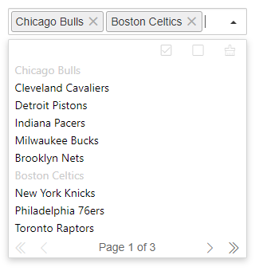

下拉列表
待选项目将以下拉列表的形式进行展示
自动补全
根据在输入框中输入的关键字时行快速检索，并在列表中展示匹配的项目
分页展示
待选项目在超过一定数量时，可根据指定的每页显示数进行分页展示
多项选择
打开插件多项目选择功能后，选中的项目将以标签（Tag）的形式存放在输入框中
键盘操作
插件的下拉，分页等操作均可以使用键盘进行快速导航、操作，提高输入效率
国际化
支持国际化多语言切换，在国际化的项目中可快速应用
待选项目将以下拉列表的形式进行展示
根据在输入框中输入的关键字时行快速检索，并在列表中展示匹配的项目
待选项目在超过一定数量时，可根据指定的每页显示数进行分页展示
打开插件多项目选择功能后，选中的项目将以标签（Tag）的形式存放在输入框中
插件的下拉，分页等操作均可以使用键盘进行快速导航、操作，提高输入效率
支持国际化多语言切换，在国际化的项目中可快速应用